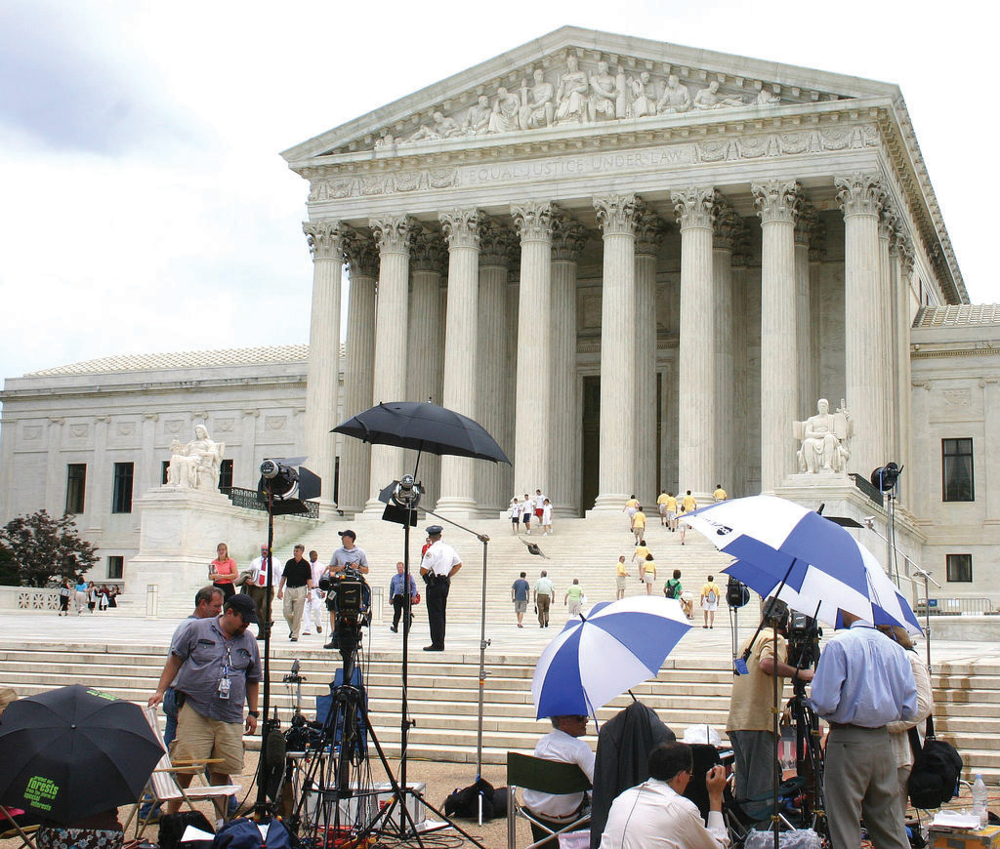

A brief item in the Washington Post titled “A Nation of Stooges” reported that, in a nationwide poll, fewer than 50 percent of Americans could name one justice of the Supreme Court and only 17 percent could name three. In contrast, 59 percent of the people could identify the character names of the comedic trio The Three Stooges.Richard Morin, “A Nation of Stooges,” Washington Post, October 8, 1995, C5.
This is the kind of cute item the media relish reporting; they have, as noted in the aforementioned article, fun with “new facts and hot stats from the social sciences.” But the comparison is unfair. The Stooges appeared in close to two hundred short movies still shown on television. Years after their deaths, they remain cult figures with apparel, toys, and candy merchandised in their name. In contrast, Supreme Court justices usually crave anonymity, avoid publicity, keep cameras out of their courtroom, and rarely appear on television.
In fact, the public’s knowledge of the Supreme Court and the justices is greater than most surveys indicate.James L. Gibson and Gregory A. Caldeira, Citizens, Courts and Confirmations: Positivity Theory and the Judgments of the American People (Princeton, NJ: Princeton University Press, 2009). Moreover, the media are much to blame that it is not higher: their coverage of the Court is sparse compared to that of the president and Congress.
After reading this section, you should be able to answer the following questions:
The American legal system handles a vast number of disputes and controversies. Our concern in this text is with civil and criminal cases, the main ways by which courts wield power and influence and make policy.Patricia Ewick and Susan S. Silbey, The Common Place of Law (Chicago: University of Chicago Press, 1998), 18–19.
In civil cases, plaintiffs (people or organizations) initiate lawsuits against defendants; courts resolve disputes by deciding or mediating between the two sides. Civil cases can involve money, contracts, property, personal injury, divorce, or child custody. “I’ll sue you” is a threat to instigate a civil action.
The vast majority of civil cases, some seventeen million annually, are filed in state courts, compared to around four hundred thousand in federal courts. State and federal laws establish the type of civil cases their courts can hear. For example, because there is no federal divorce law, all divorce cases are heard in state courts; because Social Security is a federal program, all civil disputes involving it are heard in federal courts.
Because of their costs and the often lengthy delays until they are heard in court, only about 1.3 percent of civil suits filed go to trial. Most civil cases are resolved by other means, such as settlements, plea deals, mediation, or arbitration.
Criminal cases are initiated by the government. They run the gamut from misdemeanors, such as trespassing and disorderly conduct, to felonies, such as armed robbery, rape, and murder. Unlike civil cases, criminal cases can result in the loss of liberty: a jail sentence. Around seven million people in the United States are either in prison, on probation, or on parole for crimes committed.
Most criminal laws are passed by states, and the vast majority of criminal cases originate in state courts: roughly twenty-one million criminal cases annually, compared to about seventy-six thousand in federal courts.
Around 27 percent of the criminal cases heard in federal courts involve alleged violations of federal drug laws. Often requiring mandatory sentences without parole, these federal laws are much tougher than state laws, so it makes an enormous difference whether a drug offense case is tried in a federal or state court.
Only about 4 percent of criminal cases are decided by trial. Prosecutors drop, or do not continue with charges, on another 25 percent. Most of the rest are resolved by guilty pleas without going to trial. Even for murder or manslaughter, a majority of defendants plead guilty. This often entails a plea bargainAgreement whereby a defendant agrees to plead guilty in return for a lighter sentence, a reduced charge, or both., in which defendants plead guilty in exchange for a reduced charge. The judge must approve the plea bargain.
Except for affluent defendants with high-powered and well-paid attorneys, people involved in criminal cases have an incentive to plea bargain. Defendants who insist on going to trial face sentences that can be far longer than those received by defendants who plead guilty and cooperate with the government. For lawyers and judges, plea bargains save both time and trial costs and also lighten their workloads. Because so many plead guilty, forty-seven million Americans have criminal records.Amy Beach, Ordinary Injustice: How America Holds Court (New York: Metropolitan, 2009).
Dubbed “tabloid justice,” news depictions of the criminal justice system, especially on cable television, focus on dramatic, sensational, and lurid cases.Richard L. Fox, Robert W. Van Sickel, and Thomas L. Steiger, Tabloid Justice: Criminal Justice in an Age of Media Frenzy, 2nd ed. (Boulder, CO: Lynne Rienner Publishers, 2007). A notorious instance was the Duke University lacrosse team rape story, which provoked a prodigious amount of often erroneous news coverage as well as outrageous opinions and judgments (notoriously from television commentator Nancy Grace) from March 2006 until April 2007, when all charges against the students were dropped and the case dismissed.
The types of cases receiving excessive and inflammatory coverage include those of a basketball star (Kobe Bryant) charged with rape; an actor (Robert Blake) accused of killing his wife; a decorating diva (Martha Stewart) charged with lying to the FBI; a pop star (Michael Jackson) accused of molesting children; and a mother (Casey Anthony) accused of killing her daughter. The media want, as the chief executive of truTV (formerly Court TV) put it, “the type of trials that have all the melodrama of a soap opera.”Quoted in Lola Ogunnaike, “As Court TV Gets Even Bolder, So Does Its Star,” New York Times, December 2, 2004, B1.
Majesty begins with the Supreme Court building, which commands awe and respect. It continues with what reporters see inside the courtroom—all that they see—which is designed to elevate the justices and the judicial process to a magisterial and impersonal status: the ornate setting, the ritual, the ceremony, the justices presiding in their robes, seated on high-backed chairs, physically and metaphorically raised up. This effect is conveyed most visibly in the official photograph of the nine justices (Note 15.41 "Enduring Image").
Photos of the Supreme Court Justices
The traditional group photograph that the members of the Supreme Court allow to be taken shows them arrayed and authoritative in their impressive institutional setting. This enduring image enhances the justices’ standing and contributes to people’s acceptance of their rulings.
Official Photo of the Supreme Court Justices
Source: Photo courtesy of Steve Petteway, Collection of the Supreme Court of the United Stateshttp://commons.wikimedia.org/wiki/File:Supreme_Court_US_2010.jpg.
But what if they were shown discussing cases as bargainers? Or engaged in a nonjudicial activity? Or caught in an embarrassing moment in the way that celebrities are trapped by the tabloids? Such photographs would detract from the justices’ authority and the Court’s legitimacy.
Note the furor provoked by America (The Book)Jon Stewart, America (The Book) (New York: Warner Brothers, 2004). by Jon Stewart and the writers of The Daily Show with Jon Stewart. Wal-Mart refused to stock it. The reason: one page of this parody of a civics textbook shows the faces of the Supreme Court justices superimposed over naked elderly bodies. The facing page has cutouts of the justices’ robes and a caption asking readers to “restore their dignity by matching each justice with his or her respective robe.”
The second way in which judges obtain favorable media coverage is through secrecy. Denied to reporters—and therefore absent from the news—are the justices’ discussions on granting review, conference proceedings, and the process of creating a majority through opinion writing. The press is not privy to the decision-making processes, the informal contacts among the justices, the appeals and persuasion, the negotiation and bargaining, and the sometimes pragmatic compromises.When he retired in 1994, Justice Harry Blackman gave his papers to the Library of Congress on the condition that they remained closed for five years.
Cameras are prohibited in the Supreme Court during public sessions. The stated reasons for the ban are that it prevents lawyers and justices from playing to the cameras and avoids any physical disruption of the chamber. There is also concern that news coverage would emphasize the brief oral arguments, which can be misleading—since the essence of appellate advocacy before the Court is in the written briefs. The unstated reasons are that cameras might not only cause the justices to lose their cherished anonymity and privacy but also undermine the Court’s mystique by allowing people to see and judge the justices’ behavior.
Television cameras are excluded from most other federal courts for many of the same reasons. They are allowed in all state courts under conditions and restrictions, for example, consent of the judge, agreement of the attorneys for both sides, fixed placement, and a prohibition against showing jurors.
Reporters covering the Supreme Court tend to be protective of the institution and the justices. In part, this is because they see law and politics as separate and different. Also, they do not have access to the kind of behavior and information that might lead them to think of and frame the Court in terms of policy and, particularly, politics.
Even when reporters at the Court are familiar with the facts and the oral arguments and have read the briefs of cases, they have more than enough to do just summarizing the justices’ decisions. These decisions can be complex, containing fifty to a hundred or more pages of dense text, often with detailed concurring and dissenting opinions. At its busiest time of the year, the Court releases several opinions at once; over 40 percent are issued during the last three weeks of the Court’s term. Reporters have little time to check over the cases and opinions, decide which ones are important, and prepare a report in layperson’s language.
On controversial cases, reporters are bombarded by reactions and analyses from the parties to the case, their attorneys, legal experts, and interest groups. Most of these people are usually available on the plaza in front of the Supreme Court, where microphones are set up for them.
Figure 15.8 Supreme Court Plaza
After a controversial Supreme Court decision, reporters can interview the attorneys, their clients, and interest-group spokespersons.
Source: Photo courtesy of dbking, http://www.flickr.com/photos/bootbearwdc/22009192/.
Reporters may include some of these views in their stories and show that the justice’s decisions have effects on people’s lives. But they usually lack the time and space to explain the decisions in explicitly political terms.
After the acrimony of Bush v. Gore, the four dissenting justices returned to collegiality. Media and public discussion of the decision as partisan politics died down. The authority and legitimacy of the Court and the justices were reaffirmed.
Contributing to the return to normalcy, the media usually depict the Supreme Court as apoliticalAbove and beyond politics and partisanship., that is, above and beyond politics and partisanship.
Only infrequently do stories about individual cases decided by the Supreme Court mention their political implications and the justices’ partisan positions.A study of all decisions handed down by the Court during its 1998 term corroborates our findings: see Rorie L. Spill and Zoe M. Oxley, “Philosopher Kings or Political Actors? How the Media Portray the Supreme Court,” Judicature 87, no. 1 (July–August 2003): 22–29. Our analysis of all Associated Press (AP) wire-service reports of the Supreme Court’s significant rulings during a typical term (2002–3) for cases decided by a majority of 5–4 through 7–2 revealed that the terms “partisan” or “partisanship” were rare and the words “Democrat,” “Republican,” “political,” and “politics” never appeared. Editorial writers in newspapers across the country infrequently “use ideological labels to identify voting coalitions on the Court and to characterize individual justices…The Court and its members are set apart.”Jan P. Vermeer, The View from the States: National Politics in Local Newspaper Editorials (Lanham, MD: Rowman & Littlefield, 2002), 110.
Journalists do refer to ideology when covering Supreme Court confirmation battles, that is, in the time before the nominees become members of the Court. And when the Court is obviously ideologically divided, the media characterize the blocs as conservative and liberal: for example, the 2006–7 term, when a third of all the cases (twenty-four) were decided by a 5–4 vote, with Chief Justice Roberts leading the identical five-man conservative majority on nineteen of them. A fresh reporter at the Court can see it politically. Thus the New York Times’s Adam Liptak, summarizing the 2010 term, cited studies by and data from political scientists to identify the Court as “the most conservative one in living memory.”Adam Liptak, “Court Under Roberts Is Most Conservative in Decades,” New York Times, July 24, 2010, A1. He subsequently wrote an article documenting that the justices usually selected law clerks who shared their ideological views.Adam Liptak, “Choice of Clerks Highlights Court’s Polarization,” New York Times, September 7, 2010, A1, 14, and 15. But such a perspective is exceptional.
Media coverage of the Supreme Court is limited. Many of the Court’s decisions are not reported by the news media or are recounted only briefly. The television networks give less than 4 percent of their coverage of the three branches of government to the Supreme Court. The leading news magazines focus on only 10 percent of the cases. Even a reader relying on the New York Times would not know about many of the Court’s decisions.
A few cases, unrepresentative of the Court’s docket, usually those involving the First Amendment or other rights, receive extensive coverage, as do cases arousing intense interest-group involvement. Typical is the widespread coverage given to the Court’s 5–4 decision upholding a voucher system that partially pays tuition at religious schools.Zelman v. Simmons-Harris, US Lexis 4885 (June 27, 2002). Missing are decisions about contracts and taxes, criminal law and procedure, and federal statutes and regulations, except for cases involving big-name litigants.Susan Michelich, “Media Coverage of the Supreme Court, 1999–2000 Term in USA Today and ABC News” (paper for “Politics and the Media,” Duke University, November 2000), 7–8.
Coverage of the Court is often oversimplified. For example, in news accounts, the Court’s refusal to grant certiorari is said to endorse the lower court’s decision, when all it means is that the Court has refused to review the case. In a typical example, an NBC news anchor misleadingly announced that “the Court upheld a ban on dances in the public school of Purdy, Missouri, where many people are Southern Baptists who believe that dancing is sinful and satanic.”NBC News, April 15, 1990, cited in Elliot E. Slotnick and Jennifer A. Segal, Television News and the Supreme Court (New York: Cambridge University Press, 1998), 205 (their emphasis).
The new media can breach the bulwark of majesty and secrecy protecting the Supreme Court. They can provide political and critical perspectives and cover more cases in more detail.
Reluctantly and cautiously, the Supreme Court has entered the information age. The Court’s official website now contains transcripts of oral arguments on the same day they are made. It also provides the complete opinions of each case on the docket since the 2003 term and instructions on how to obtain opinions for earlier cases. In 2009, former Justice O’Connor launched a website called “Our Courts,” which explains courts in relation to the Constitution. Much of the other information now available, however—such as on Scotusblog.com, the go-to site for Supreme Court coverage—is intended for the legal community.
The Internet does contain commentary on the Court’s decisions. Blogs range from the lighthearted and gossipy “Underneath Their Robes,” which breaks with judges’ aloofness and inaccessibility, to the academic “Becker-Posner” blog with essays by the two authors and a comment forum for reader response. There is now even an “Anti-Becker-Posner-Blog.”
In an example of new-media innovation in covering a politically significant trial, six bloggers joined together to create Firedoglake. The site offered, from a liberal perspective, intensive, real-time coverage of the perjury trial of Lewis Libby Jr., former top aide to Vice President Dick Cheney. The coverage went beyond anything provided by the mainstream media.
The news media’s coverage makes it hard for people to see the political orientation of judges engaged in making and changing public policies. This is likely to reinforce the legitimacy of the courts and confidence in judges.
Indeed, 80 percent of the people in a survey conducted for the American Bar Association strongly agreed or agreed that “in spite of its problems, the American justice system is still the best in the world.”The American Bar Association, “Perceptions of the U.S. Justice System,” http://www.abanet.org/media/perception/perception.html. Fifty-four percent strongly agreed that “most judges are extremely well qualified for their jobs.” Most faith was expressed in the Supreme Court, with 50 percent having strong confidence in it and only 15 percent having slight or no confidence.
However, reports of dramatic and sensational cases and their depictions in popular culture do make people quite critical of the way the legal system appears to operate.These data come from Richard L. Fox and Robert W. Van Sickel, Tabloid Justice: Criminal Justice in an Age of Media Frenzy (Boulder, CO: Lynne Rienner Publishers, 2001), chap. 4 and the second edition, coauthored with Thomas L. Steiger (2007), chap. 4. Fifty-one percent of those surveyed agreed that it “needs a complete overhaul.” Close to 80 percent agreed that “it takes too long for courts to do their job” and “it costs too much to go to court.”
Tabloid trials can increase people’s knowledge of some aspects of the legal system. In a survey conducted in the wake of the overwhelmingly publicized criminal and civil cases involving O. J. Simpson, almost everyone knew that anyone accused of a crime has the right to be represented in court by a lawyer and that a defendant found not guilty in a criminal trial can be sued in a civil trial. Two-thirds knew that a criminal defendant is innocent until proven guilty, although one-third mistakenly believed the reverse.
The justices of the Supreme Court interact with reporters mainly through the legal language of their written decisions. They accentuate the Court’s majesty while concealing its inner workings and excluding cameras. Reporters perceive the Supreme Court primarily as a legal institution. They lack the time and space to report in detail on its activities. News media coverage of the Supreme Court is incomplete and oversimplified, usually depicting the justices as apolitical. These depictions reinforce the legitimacy of courts and people’s confidence in judges. Americans believe that the legal system is the best in the world, but are critical of how it operates.
Students in Professor David Protess’s “Miscarriage of Justice” class at Northwestern University not only study the criminal justice system but also get the chance to influence it. Protess and his students use investigative reporting techniques to unearth information that is then used to reverse wrongful convictions in Illinois, including death-penalty sentences. They pore over case documents, reinterview witnesses, and track down tips from informants.
Their work has helped change public opinion about the death penalty, as people have become less supportive of a policy that could result in the execution of innocent people. In 2000, Governor George Ryan of Illinois issued a moratorium halting executions in the state, sparing the lives of 157 inmates on death row.David Moberg, “Carrying Justice,” Salon.com, March 1, 2000, http://www.salon.com/books/it/2000/0301/deathpenalty.
The media contributed to the erosion of support for the death penalty by putting these stories into a new (irresistible) innocence frame: that of an error-prone, sometimes corrupt, judicial system that executed innocent defendants. This frame became far more prevalent than one less sympathetic to the convicted, for example of murderers and their victims.Frank R. Baumgartner, Suzanna L. De Boef, and Amber E. Boydstun, The Politics of the Death Penalty (New York: Cambridge University Press, 2008).
Students enrolled in Protess’s course sometimes complain about the heavy workload, but most devote the time and energy willingly. “Once you get that involved in a case, you make it your life’s work. You know you could have an innocent life at stake, and if you don’t save it, nobody will,” states one graduate.David Moberg, “Carrying Justice,” Salon.com, March 1, 2000, http://www.salon.com/books/it/2000/0301/deathpenalty. Some of Protess’s students go on to cover the criminal court beat or become lawyers working for the rights of the accused.
Programs in which students and faculty work together have accounted for the vast majority of the exonerations of death-row inmates since the 1970s. A few programs, such as the Innocence Project at the Benjamin Cardozo Law School of Yeshiva University, specialize in death-penalty cases. Legal clinics associated with many law schools help those who cannot afford representation with their cases. You do not have to be a law student to be involved.
Bergman, Paul, and Michael Asimow. Reel Justice: The Courtroom Goes to the Movies. Kansas City, KS: Andrews and McMeel, 1996. A droll discussion of the (mainly inaccurate) depictions in movies of various aspects of the judicial process.
Carp, Robert A., Ronald Stidham, and Kenneth L. Manning. Judicial Process In America, 7th ed. Washington, DC: CQ Press, 2007. A comprehensive and enlightening text.
Davis, Richard. Decisions and Images: The Supreme Court and the Press. New York: Prentice Hall, 1994. An authoritative study of the relationship between the Supreme Court and the press.
Dickson, Del, ed. The Supreme Court in Conference (1940–1985): The Private Discussions Behind Nearly 300 Supreme Court Decisions. New York: Oxford University Press, 2001. Justices’ conference notes organized and annotated around key decisions.
Fox, Richard L., Robert W. Van Sickel, and Thomas L. Steiger. Tabloid Justice: Criminal Justice in an Age of Media Frenzy. Boulder, CO: Lynne Rienner Publishers, 2007. Documents how the media’s obsession with high-profile trials has distorted the public’s understanding of the judicial system.
Gilman, Howard. The Votes That Counted: How the Court Decided the 2000 Presidential Election. Chicago: University of Chicago Press, 2001. The single best book on the subject.
Goldman, Sheldon. Picking Federal Judges: Lower Court Selection from Roosevelt Through Reagan. New Haven, CT: Yale University Press, 1999. The definitive analysis of the process.
Irons, Peter H., and Stephanie Guitton. May It Please The Court…: 23 Live Recordings of Landmark Cases as Argued Before The Supreme Court. New York: New Press, 1993. Historical treasures—tapes of oral arguments before the Supreme Court.
Johnson, Timothy R., and Jerry Goldman, ed. A Good Quarrel: America’s Top Legal Reporters Share Stories From Inside the Supreme Court. Ann Arbor: University of Michigan Press, 2009. Provides a website with audio links to excerpts of the oral arguments discussed in the book.
Maltese, John Anthony. The Selling of Supreme Court Nominees. Baltimore: Johns Hopkins University Press, 1995. A study of the evolution and condition of the nomination and confirmation process.
Sherwin, Richard K. When Law Goes Pop: The Vanishing Line Between Law and Popular Culture. Chicago: University of Chicago Press, 2000. Argues that high-profile trials and programs with judges on television threaten to turn law into spectacle.
Slotnick, Elliot E., and Jennifer A. Segal. Television News and the Supreme Court. New York: Cambridge University Press, 1998. Shows that Supreme Court rules and television news norms produce coverage that is infrequent, brief, and sometimes inaccurate.
Adam’s Rib (1949). A classic comedy in which a woman defense attorney (Katharine Hepburn) and her prosecutor husband (Spencer Tracy) battle in court and at home over law, justice, and her client, a woman accused of shooting her husband.
Erin Brockovich (2000). Based on a true story. Marginal, nonlawyer employee (Julia Roberts) at small law firm battles successfully against a polluting corporation to achieve justice for decent, ordinary people.
First Monday in October (1981). Romance blossoms between a crusty, conservative Supreme Court justice and his new, liberal, female colleague.
Inherit the Wind (1960). Based on true story. In a steamy Southern courtroom, celebrated lawyer Clarence Darrow (Spencer Tracy) defends a schoolteacher accused of violating the law by teaching evolution.
Juvenile Court (1973). Frederick Wiseman’s fascinating documentary reveals a juvenile court in action (and inaction).
Philadelphia (1993). A lawyer with AIDS (Tom Hanks) sues the sanctimonious law firm that dismissed him.
The Verdict (1982). An alcoholic, failed lawyer (Paul Newman) struggles to regain his dignity and win a medical malpractice case against an unscrupulous law firm and a corrupt judge.
To Kill a Mockingbird (1962). Small-town Southern lawyer (Gregory Peck) braves the hostility of his fellow citizens by defending a black man falsely accused of raping a white woman.
Twelve Angry Men (1957). One man (Henry Fonda) convinces the other jury members to change their verdict to innocent.